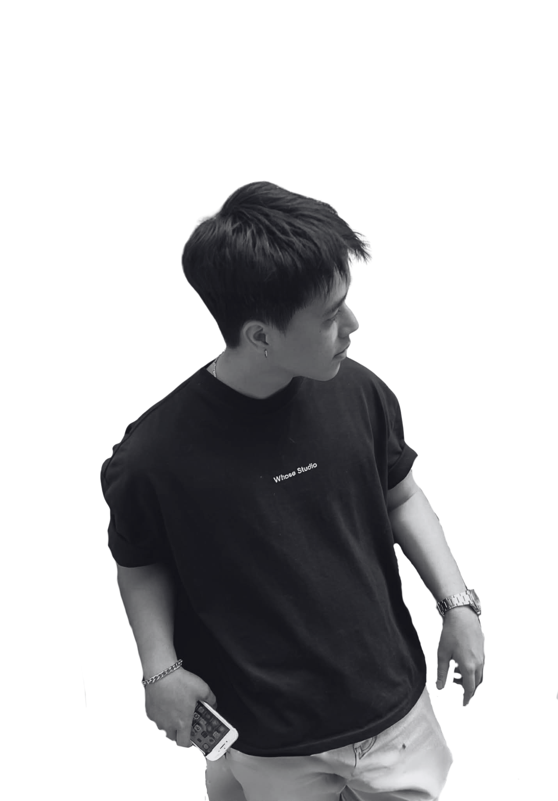

Translating complex business requirements into structured logic and intuitive digital solutions.
I am an IT Business Analyst and UI/UX Designer with a strong passion for minimalism and systems thinking. Over the past period, I have dedicated myself to mastering enterprise-level business flows and user-centric design through independent projects and rigorous study.
My core strength lies in bridging the gap between stakeholders and development teams—ensuring that business goals are perfectly aligned with user flows, system logic, and interface design.
Core Competencies: Requirement Gathering, Process Modeling, User Stories, High-fidelity Prototyping, Minimalism UI.
Các dự án trọng điểm được sắp xếp theo mức độ ưu tiên nghiệp vụ
Thiết kế giao diện và hệ thống quản trị khách hàng (CRM) cho dự án FlowCRM.
Dashboard phân tích OEE, tỉ lệ lỗi, và năng suất dây chuyền sản xuất linh kiện ô tô với dữ liệu mô phỏng 30 ngày.
Công cụ quản lý User Stories, Kanban Board, Traceability Matrix, và Sprint Metrics cho dự án Smart Factory IoT.
Phân tích quy trình nghiệp vụ As-Is vs To-Be với BPMN visualization, bottleneck detection và improvement recommendations.
Thiết kế giao diện và trải nghiệm người dùng cho dự án thời trang Atelier / Clother.
Thiết kế giao diện và trải nghiệm người dùng cho dự án LuxRoom.
Thiết kế UI/UX cho Portfolio cá nhân phiên bản năm 2026, được trưng bày trên Behance.